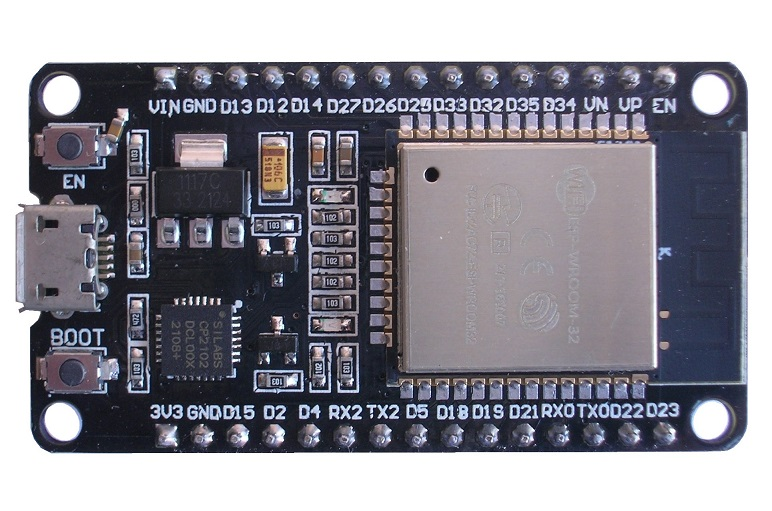

This project template forms the basis of an expansion board (Module) for the
ESP32 DevKit an evaluation board with two 15-pin GPIO
header based on the ESP-WROOM-32 SoC.

This project includes a PCB edge set according to the edge board, with 2
connectors and 4 mounting holes placed correctly to align the two boards.
For more information about Espressif ecosystem, see ESP-IDF and for some code examples ESP-IDF Examples.
(c)2024 Manuel Alejandro Baez Ponce
(c)2024 KiCad Developers
(c)2024 Espressif Systems (Shanghai) Co., Ltd.